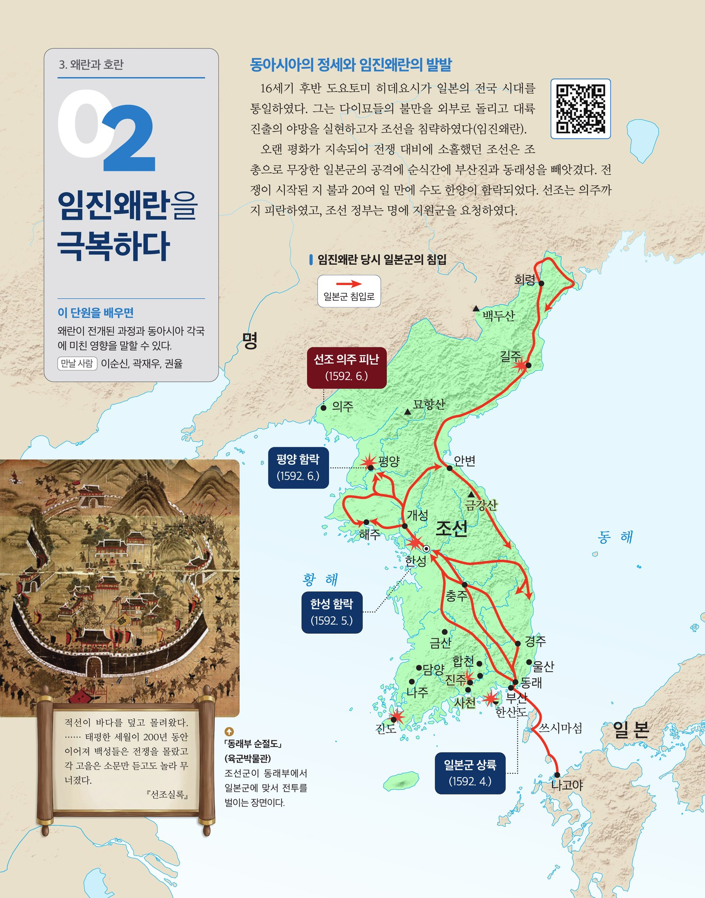
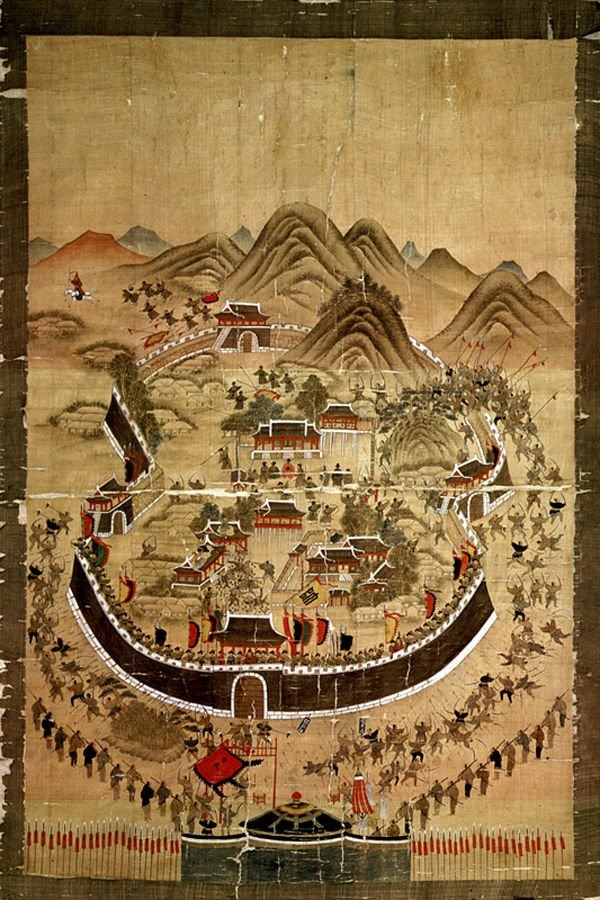

3. 왜란과 호란 · 02
임진왜란을 극복하다


네 문제를 풀어보며 배운 내용을 정리해봅시다.

1592년 4월 15일, 임진왜란 초기 일본군이 부산에 상륙한 바로 다음 날 벌어진 동래성 전투를 그린 기록화입니다. 18세기 화원 변박(卞璞)이 1760년에 그린 작품으로, 160여 년 전 사건을 생생하게 재현했습니다.
동래부사 송상현은 일본군의 "길을 빌려달라"는 요구에 "싸워 죽기는 쉬우나 길을 빌려주기는 어렵다(戰死易, 假道難)"는 여섯 글자의 답을 보냈습니다. 그는 관복을 갖춰 입고 남문 위에 정좌한 채 끝까지 저항하다 순절했습니다.
성 안에서는 조선 군민이 필사적으로 맞서 싸우고, 성 밖은 붉은 깃발과 투구를 쓴 일본군이 빽빽이 둘러싸고 있습니다. 남문 위에는 관복을 입은 송상현이 단정히 앉아 있고, 여인들이 지붕 위에서 기왓장을 던지는 모습도 보입니다. 당시 항전의 처절함과 백성들의 저항 의식이 한 화면에 응축되어 있습니다.
동래성 전투는 조선군이 수적 열세에도 굴하지 않고 결사 항전한 상징적 사건으로 기록되었습니다. 송상현의 순절은 이후 의병 운동의 정신적 뿌리가 되었으며, 「동래부 순절도」는 임진왜란 초기 전투 양상을 보여주는 가장 귀중한 시각 자료 중 하나로 평가됩니다.